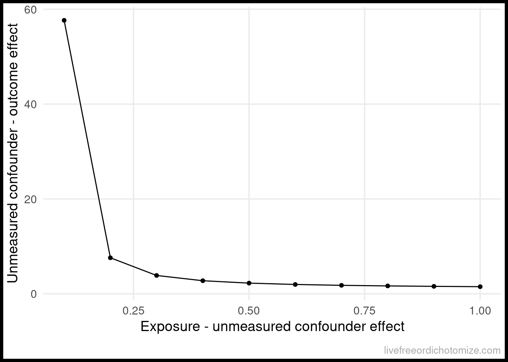
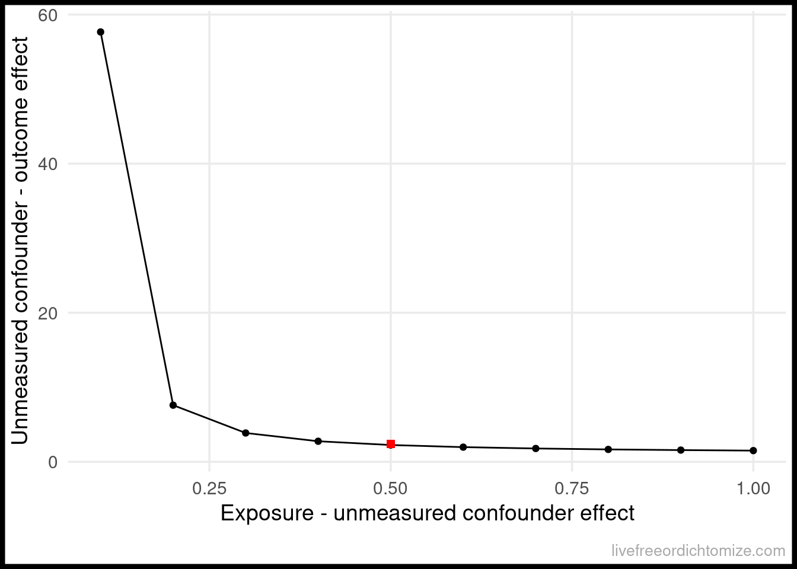

install.packages("tipr")tipr: An R package for sensitivity analyses for unmeasured confounding
rstats
The tipr R package has new updates!
The tipr R package has some new features! And a new and improved API!
What is tipr
tipr is an R package that allows you to conduct sensitivity analyses for unmeasured confounders. Why might you want to do that? Well, as it turns out, the assumption of “no unmeasured confounders” is integral to any estimation of a causal effect. This assumption is untestable, so often the best we can do is examine how far off our estimates would be should an unmeasured confounder exists, hence sensitivity analyses!
How do I use tipr
You can install the CRAN version by running the following:
library(tipr)The package comes with a few example data sets. For example, the dataframe exdata_rr is simulated data that can be used to estimate the effect of a binary exposure on a binary outcome, estimated via a risk ratio. This data set has 4 columns:
exdata_rr# A tibble: 2,000 × 4
.unmeasured_confounder measured_confounder exposure
<dbl> <dbl> <dbl>
1 0.716 -0.890 0
2 0.134 -0.249 0
3 0.238 -0.104 0
4 0.0286 0.165 0
5 -0.598 0.812 0
6 0.00419 -0.563 0
7 -0.960 -0.559 0
8 -1.15 1.14 0
9 -0.374 -1.23 0
10 1.80 0.495 0
# ℹ 1,990 more rows
# ℹ 1 more variable: outcome <int>Using this data, we could estimate the exposure-outcome relationship using the measured confounder as follows:
mod <- glm(
outcome ~ exposure + measured_confounder,
data = exdata_rr,
family = poisson)
## calculate the risk ratio by exponentiating
## the coefficient
coef(mod) %>%
exp() (Intercept) exposure measured_confounder
0.03656318 1.49477100 2.42566275 We observe a risk ratio of 1.5 for the exposure after adjusting for the measured confounder. We can then get a confidence interval for this output. Note that here we are using a generalized linear model with a log link (via the Poisson family) to estimate this risk ratio. When estimating the risk ratio using this method, it is important to estimate the variability using robust standard errors (a sandwich estimator). In R, you can use the sandwich and lmtest packages to do this.
lmtest::coefci(mod, vcov = sandwich::vcovHC) %>%
exp() 2.5 % 97.5 %
(Intercept) 0.02778992 0.04810614
exposure 1.10497223 2.02207828
measured_confounder 2.13761161 2.75252986Our observed effect, after adjusting for our measured confounder is a risk ratio of 1.5 (95% CI: 1.1, 2.0).
Let’s assume our unmeasured confounder is normally distributed with a mean of 0.5 in the exposed group and 0 in the unexposed (and unit variance in both) resulting in a mean difference of 0.5. We can use this to solve for the relationship between the unmeasured confounder and outcome needed to “tip” the analysis (that is needed to make the observed effect, 1.5, cross 1).
To do this, we are going to use the tip_with_continuous function. We will set the effect_observed to 1.5 and the exposure_confounder_effect to 0.5.
tip_with_continuous(
effect_observed = 1.5,
exposure_confounder_effect = 0.5
)ℹ The observed effect (1.5) WOULD be tipped by 1 unmeasured
confounder with the following specifications:
• estimated difference in scaled means between the
unmeasured confounder in the exposed population and
unexposed population: 0.5
• estimated relationship between the unmeasured confounder
and the outcome: 2.25# A tibble: 1 × 5
effect_adjusted effect_observed exposure_confounder_effect
<dbl> <dbl> <dbl>
1 1 1.5 0.5
# ℹ 2 more variables: confounder_outcome_effect <dbl>,
# n_unmeasured_confounders <dbl>The output is a data frame with 5 variables – in this case, we are interested in the confounder_outcome_effect column, as this tells us the magnitude of the relationship between an unmeasured confounder and outcome needed to tip this analysis. This results in a confounder-outcome effect of 2.25, meaning that a hypothetical unobserved continuous confounder with a mean difference of 0.5 would need a relationship of at least 2.25 with the outcome to tip the analysis at the point estimate.
Alternatively, you could look at a range of potential values for the exposure_confounder_effect and plot the relationship.
tip_df <- tip_with_continuous(
effect_observed = 1.5,
exposure_confounder_effect = seq(0.1, 1, by = 0.1),
verbose = FALSE
)We could then plot these results:
library(ggplot2)
ggplot(tip_df,
aes(x = exposure_confounder_effect,
y = confounder_outcome_effect)) +
geom_point() +
geom_line() +
labs(x = "Exposure - unmeasured confounder effect",
y = "Unmeasured confounder - outcome effect")
The line represents the values needed for the unobserved confounder to tip this relationship.
Since this data was simulated, we can calculated what the actual effect is.
mod_actual <- glm(
outcome ~ exposure + measured_confounder + .unmeasured_confounder,
data = exdata_rr,
family = poisson)
coef(mod_actual) %>%
exp() (Intercept) exposure
0.02450901 0.92108511
measured_confounder .unmeasured_confounder
2.43654796 2.41680059 lmtest::coefci(mod_actual, vcov = sandwich::vcovHC) %>%
exp() 2.5 % 97.5 %
(Intercept) 0.01801732 0.03333966
exposure 0.68914975 1.23107900
measured_confounder 2.12823267 2.78952863
.unmeasured_confounder 2.10602770 2.77343223The actual risk ratio is 0.9 (95% CI: 0.7, 1.2) (so null!). The actual relationship between the unmeasured confounder and outcome is 2.4. We can also calculate the actual exposure - unmeasured confounder effect:
exdata_rr %>%
dplyr::group_by(exposure) %>%
dplyr::summarise(m = mean(.unmeasured_confounder))# A tibble: 2 × 2
exposure m
<dbl> <dbl>
1 0 0.0438
2 1 0.547 The actual difference is 0.5. Returning to our plot, we can see that this point is to the right of the “tipping” bound, indicating that this unmeasured confounder is “large” enough to tip our result (which is exactly what we saw! Before adjusting for this, we had a risk ratio of 1.5, after adjusting we observe a “tip” (crossing the null, 1) to 0.9).
ggplot(tip_df,
aes(x = exposure_confounder_effect,
y = confounder_outcome_effect)) +
geom_point() +
geom_line() +
annotate(
"point",
x = 0.5,
y = 2.4,
size = 2,
shape = "square",
color = "red"
) +
labs(x = "Exposure - unmeasured confounder effect",
y = "Unmeasured confounder - outcome effect")
The details
The functions in the tipr package follow a unified grammar. The function names follow this form: {action}_{effect}_with_{what}.
For example, to adjust (action) a coefficient (effect) with a binary unmeasured confounder (what), we use the function adjust_coef_with_binary().
Below is a copy of the table included in a recent JOSS article about this package.
Table 1. Grammar of tipr functions.
| category | Function term | Use |
|---|---|---|
| action | adjust |
These functions adjust observed effects, requiring both the unmeasured | confounder-exposure relationship and unmeasured confounder-outcome relationship to be specified. |
tip |
These functions tip observed effects. Only one relationship, either the unmeasured confounder-exposure relationship or unmeasured confounder-outcome relationship needs to be specified. | |
| effect | coef |
These functions specify an observed coefficient from a linear, log-linear, logistic, or Cox proportional hazards model |
rr |
These functions specify an observed relative risk | |
or |
These functions specify an observed odds ratio | |
hr |
These functions specify an observed hazard ratio | |
| what | continuous |
These functions specify an unmeasured standardized Normally distributed confounder. These functions will include the parameters exposure_confounder_effect and confounder_outcome_effect |
binary |
These functions specify an unmeasured binary confounder. These functions will include the parameters exposed_confounder_prev, unexposed_confounder_prev, and confounder_outcome_effect |
|
r2 |
These functions specify an unmeasured confounder parameterized by specifying the percent of variation in the exposure / outcom explained by the unmeasured confounder. These functions will include the parameters confounder_exposure_r2 and outcome_exposure_r2 |
You can find full documentation here: lucymcgowan.github.io/tipr/